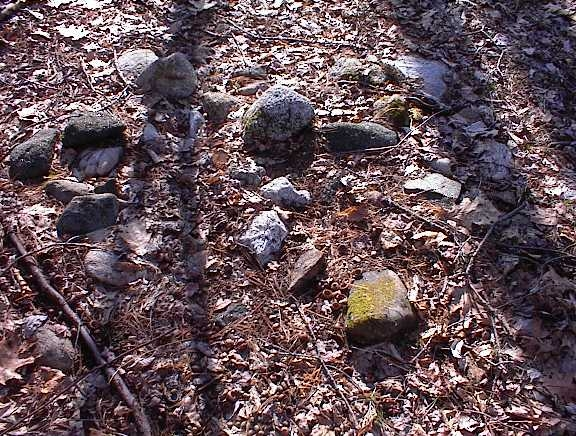
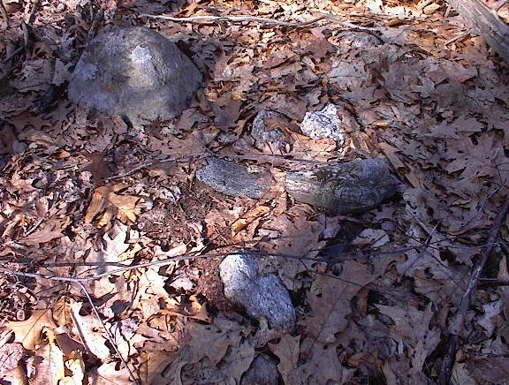
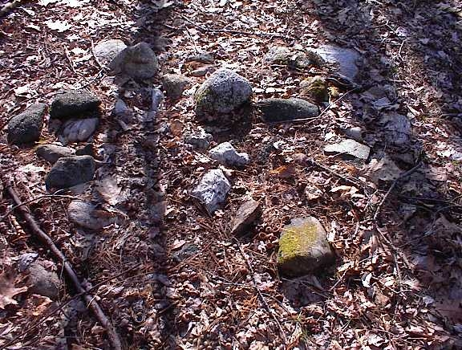
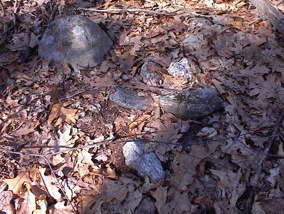
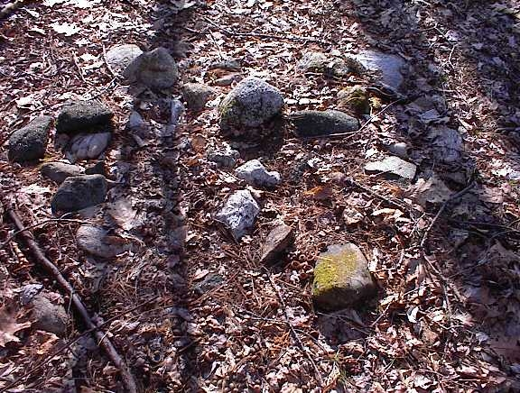
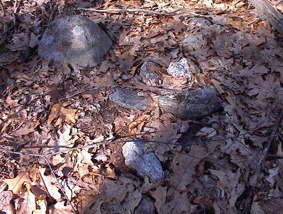

Let's review what was discussed in the different articles and mention some new conclusions which can be added here at the end. These are not really conclusions so much as the outcomes of a loose set of associations. As we go over these loose associations andReview what has been seen, some of the hypotheses begin to combine into a narrative with some internal consistency and some ability to make predictions.
This first article takes us from observations about split-wedged rocks to the realization that many of the structures use heavy rocks which are too big to be moved casually. There is something curious going on: split-wedged rocks have no known practical use but a good deal of effort went into making some of them - and it has nothing to do with rock splitting technology. They are widespread in the area but only north of the Concord River - a distribution which must correspond to a difference in land use north and south of the river. This distribution, together with the almost compulsive and slightly ceremonial nature of some places, suggests that split-wedged rocks might be Native American.
It is significant that quartz is not used as a wedge in split-wedged rocks. This observation is the first hint that there might be a way to understand the reasons for making a split-wedged rock. In later articles, especially in the discussion of the use of quartz in possible burial piles, it became more of a working hypothesis that quartz is used as a transmitter and non-quartz as a blocker. If this is so, then the observation about quartz not being used for split-wedged rocks means that the wedge is a blocker. It is not to keep the door open but to keep it shut. In this context we look at the concentration of split-wedged rocks at the site where Rt 3 crosses Rangeway Rd in Billerica. Why would all the doorways be blocked here? I am not sure if I believe my own answer, but here is what is consistent: some reason necessitated the sacred site be shut down, the doors locked, the people sent home. Perhaps this happened when the state of Massachusetts built a highway through the middle of the site.
In this article I continue the discussion of simple structures which are very widespread, in this case Rock-On-Rocks. There is evidence of many different possible uses including trail marking, forming alignments, or acting as energy barriers around an energy spot like a spring. Although there is too much variety to come to a simple conclusion, again the absence of quartz stands out as meaningful and suggests that one use, at least, was to block and help focus energy.
Take a close look at this picture.
At this point in the discussion I no longer consider alternatives to these being related to Native American ceremonialism. But the important lesson is that some of these structures must be quite recent. So ceremonialism of this sort must have been going on recently.
In this article I continue the discussion of simple structures, in this case twin rocks shaped like boat rudders, or cashews, and placed upon a support boulder. These are also quite widespread. As I began writing the article, the task of identifying this specific shape seemed hopeless. Then, due to a coincidence, I made the suggestion that the boat rudder shape might be the representation of a heart. This made a small amount of sense at the time but still seemed a hopeless speculation.
A surprising indirect confirmation came later when looking more carefully at piles considered to be burial piles: namely that they often have a single small boat rudder/cashew shaped rock at their center - roughly where the heart would be (and also sometimes made out of quartz).


Here are three pictures of rock piles believed, for other reasons, to be burials. A very minor detail but which I think is significant is the cashew shaped rock near the middle of each pile [it is a lighter colored rock in the second and third photos]. When minor details like this are given a reasonable explanation and when we start noticing the details because of the theory, then the theory starts to be valuable. At a minimum the theory makes us more careful observers.
The re-occurrence of the proposed heart symbolism is very encouraging. In particular it allows focusing on the question: what does a pair of hearts represent? One loose association leads to another, and among the possible meanings of a pair of hearts, one idea is that it represents a promise or contract. If we try out that idea, it can explain why Twins often occur at the edge of a larger site. It could be acting as a warning or a "No Tresspassing" sign. Twins occur at the edge of large sites in Stow and Acton.
Another interesting example is the large erratic boulder mentioned in the final article. It is near the Cisco buildings in Boxborough and it is plainly visible from a distance. Next to the erratic is an example of Twins and being next to this boulder, with the interpretation of Twins as a promise or a "No-Tresspassing" sign, it suggests this large erratic boulder marks a border between two territories, visible from a distance. This is a non-trivial result, although the end of a string of weak supposititions.
I feel the heart shape hypothesis is the best result achieved in these articles. Even though it could be wrong, it is on the right track and does lead to good internal consistency and more careful observations.
This article is the most scientific and objective. I show a map of the area around Concord with a plot of 140 rock pile sites. The area was thoroughly explored, rock piles were found in places of little agriculture, near headwaters and at springs. This is the strongest argument that rock piles are Native American. Rather than being based on an attack of the explanation in terms of field clearing and agricultural origins, it makes the positive observation that there is a relation between springs and rock piles. By its nature, that is a ceremonial relationship. There has been only one group of people performing cermemonies in the woods throughout this area - the Native Americans.
In order to make the point that rock piles were in topographic correlation with land forms and features, I proposed an experiment: to examine the topo map of some (relatively) remote place, draw circles where rock piles would be expected and then go there and find the rock piles inside the circles. This turns out to work in general but not in particular: the topo map can give a rough idea of an area that might have rock piles, but local conditions on the ground cannot be predicted and frustrate the experiment. So, when I conducted my first experimental trial at Leominster State Forest, I found rock piles on my way towards the circles but I was unable to get to most of the circles. Another thing frustrating the simple experiment is that the "rules" of site location vary from place to place. For example, one thing I learned, but which I had to find out the hard way by crawling around in the upland laurels getting tired and not finding anything, is that near Leominster State Forest, rock piles are mostly down on the lower shoulders of hills and not on the heights.
Accordingly, I selected a lower down place to explore; further west in Princeton, MA. I planned to explore a lower area shown on this map fragment between the road and the steeper parts of the hill. I ended by seeing rock piles in two places, as well as an articificial mound or berm and, as a bonus, an underground stone chamber - all in this selected area. So the original experiment was a failure but, with more care and without requiring too much precision, good rock pile hunting areas can be identified on the topo map.
As for negative arguments against field clearing and the "agrarian" hypothesis, the strongest possible evidence against it is that the majority of rock piles sites occur where the minimum agrarian activity occurred.
This article tries to classify rock piles according to their function with respect to, the Sky, the Earth, or the Underworld. I have no business trying to say this is what the rock piles meant to the people who actually created them but it is convenient way of looking at the piles. Within these larger functional categories, a typology based on physical characteristics is proposed, and the different types of rock piles are listed. Several of these types are clear and well defined. I am confident other people will find similar structures and agree on the identifications. At the same time some of the other types, for example "horizon" and "platform", probably are not that clearly defined. In any case, even slightly inaccurate typologies are worthwhile because they allow plotting composite distribution maps.
For example I think this plot shows evidence of two separate rock pile cultures in this area.
As for other rock pile types, a new one was mentioned in an article by Suzanne Carlson in the NEARA Journal (2). She describes a rock pile, excavated by removing small cobbles from a shapeless pile to reveal a circle of larger stones. The suggestion was made that this could be a vision quest seat which had been back-filled to keep the spirits in (or out, as the case may be). This is consistent with the types of seat I desribed finding around here.
In this article I tried to give some account for how rock piles could be recent and even modern. The "Indian Farmer" is a phrase which tries to give context to the possibility of ceremonial rock piles in the modern woods. This is a variation on what Mavor and Dix call the "invisible Indian".
I gave several examples of English family names associated with properties having rock piles. The Patch Family for example were reported to be religious dissidents when they left Europe. Is it possible, as Mavor and Dix suggest (p. 4) may have happened occasionally, that these families adopted aspects of Indian religion? Rather than Indian Farmers might we be dealing with "Heathenized Europeans"? That is a another possibility.
Finally, having begun with hints and suggestions about rock piles, having been quantitative and having derived statistical results, having provided a context in which it is possible for them to exist as stated; finally it is time to return to a literary approach in order to describe rock pile sites. Guesswork is required. I think there is some use to dividing ceremonies into Sky, Earth, or Underworld related but, if meaningful at all, that needs to be a loose framework in which an individual expression can vary. In this article I describe three sites which each seem to have a single purpose, one for each of the "worlds" of Underworld, Sky, and Earth. I focused on the sites' individuality and I did not discuss how they are representative of their respective worlds. Let's do that now.
The site described as a Burial Place, representing the Underworld, has as principle characteristics: a) the presence of low ground pile with white or quartz stones near their center; b) the westward and eastward views over water; and c) the presence of a few effigies including turtle and crow. A number of other sites have low ground piles with white quartz stones and views westward and eastward over water. I have not seen any other crow effigies but I did find another site with "quartz-marked" piles and turtles.
Here is one of several possible turtles from this location and an adjacent quartz-marked pile. I had to move leaves to find the quartz but I guessed it was there.
There are several other sites, enclosed by stone walls, where the quartz-marked piles fill the enclosure. It appears to me that the quartz use is the most characteristic feature of these sites. If it is correct that these are burials, then the quartz plays a key role which might have to do with the spirit passing through the stone.
The site described as a Place of Natural Energy, representing the Earth and the living world, has the principle characteristics: (a) a headwater lake; (b) effigy piles; (c) natural alignment to the north. a cardinal direction; and (d) twins at the edge.
I have found many sites with effigies near an energy source including such things as springs, heatwater lakes, boulders, and lightening struck trees. These sites often seem to have views to the southeast but this is not required. Often these sites also include quartz-marked piles which might be burials.
The site described as An Observatory, representing the Sky, has the principle characteristics: (a) looking out over a valley with a broad sweep of horizon; (b) a large number of marker piles with pointers; (c) a number of alignements of three or more piles; (d) semi regular spacing between piles; (e) numerous burnt rocks; (f) several quartz blocks concentrated in one spot; and (g) Twins at the edge.
Other sites with numerous marker piles or clearly defined alignment of piles are not common but they do occur. For example the "grids" in Acton have aligned piles as well as markers. I have seen other sites with burnt rock and with views over a valley but have not noticed other examples of quartz being concentrated at one spot. Finally, Twins are common at the edge of rock pile sites.
The theory does not say that every site must be exclusively dedicated to one function. Rather, sites often have multiple functions. The three sites discussed in detail here were selected because they seem to focus on a single primary function. This provides a better chance of understanding that single function and I hope this will, in the future, help us understand more complicated multi-purpose sites.
Finally, many of the patterns we see, comparing pile to pile or site to site, are based on extremely subtle and minor characteristics of the sites, the piles, or even single individual rocks in the piles. Although these features are subtle they are no less consistent and characteristic and so we learn that to understand rock piles we need to observe the details. Rather than just a pile of randomly tossed together rocks, here there are many more details to be noticed and the smallest detail may have meaning.
(1) Manitou - The Sacred Landscape of New England's Native Civilization.
James W. Mavor, Jr. and Byron E. Dix.
Inner Traditions International, Ltd. One Park Street Rochester, VT 05767 (1989). (p 279)
(2) Big Dig in Bingham.
Suzanne Carlson.
NEARA Journal Vol. 38 No.2 Winter 2004 (p 41).
Quote from archeologist Ralph Coffman.
Copyright © 2005 Peter Waksman. The views expressed here are the opinions of the author and are not the official opinion of NEARA.